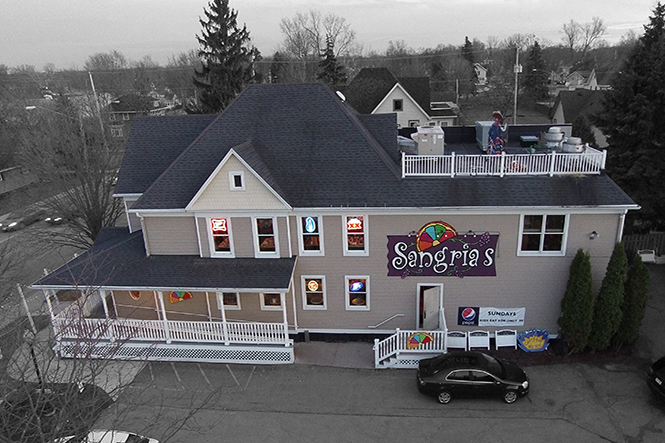

About Sangria's
Our History
Sangrias Mexican Grill began in 2008 in Oshkosh, WI as a family restaurant with owners, Luis Vazquez, Shirley Vazquez and Sarah Gregory. Childhood recipes from Veracruz, Mexico became the inspiration for the authentic resort-style creations of Luis and his mother, Terri. Luis began cooking with his mother at a very early age and developed a passion and flare for creative cuisine utilizing a variety of seafood, meats, and vegetables which were readily available along the coastal regions of Mexico. He began operating his own businesses as a teenager and relocated to the United States to pursue his dream of working and owning a restaurant Shirley and Sarah were born and raised in Virginia and enjoy sharing their "southern hospitality" with guests. Their expertise with coordinating events, including weddings, rehearsals, business socials, catering, graduation and family celebrations have proven to be a dynamic addition to the team.
Our Goal
At Sangria's Mexican Grill, we offer guests an escape to Mexico through authentic dishes, exceptional service, and a fun atmosphere. Our unique menu features fine Mexican cuisine with an emphasis on the complete dining experience. Our full service bar highlights the Fox Valley's Only Tableside Margaritas, made from the finest 100% blue agave tequilas available! Each amazing dish is prepared with the highest quality ingredients from the owner's original family recipes, which have been handed down for generations from the Veracruz region of Mexico. Our signature recipes feature succulent seafood, tender slow-cooked meats, savory handmade sauces, authentic spices, and fresh vegetables, which combine into a mouth-watering dining experience. With eight incredible side dishes to choose from, our guests can enjoy something different with every visit. At Sangrias, we are confident that our food is so good, you may just want to trade your cheesehead for a sombrero!